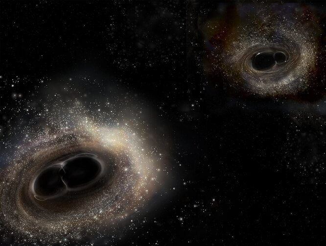

Концентрированная тёмная материя

Ингредиенты:
- Две части плутонических кварков
- Одна часть цезия
- Дистиллированная вода
Способ приготовления:
- Взять тару-казан планеты Зигерион и установить её в ровном положении по отношению к вселенной
- Налить в казан две части поутонических кварков и одну часть цезия, позже перемешать
- К получившейся массе добавить дистиллированной воды
- Поздравляем! Вы получили концентрированную тёмную матреию
Внимание!
Перед употреблением убедитесь, что ваша приготовленная концентрированная тёмная материя не взорвалась
Назад